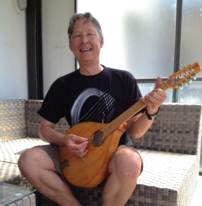
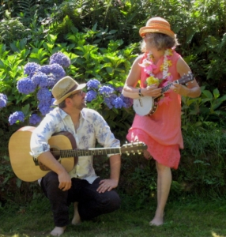

Im Frühjahr 2009 lernte Frank Ziegler (Guitaren, Mandolin, Bass, Ukulele, Gesang), im Rahmen eines Blues-Guitaren-Workshops in Sedrun, Stefan Sutter kennen. Zu zweit übten sie alte Blues-Songs und beschlossen dann, ihr Können vor Publikum zu zeigen.
Ende 2009 stiess Irène Capello (Ukulele, Banjolele, singende Säge, Melodica, Akkordeon, Bass, Gesang) dazu und die erste Howlers Formation, die „Lakeside Howlers" gaben am Silvester 2009 ihr Debütkonzert.
Zu den „Lakeside Howlers" gesellten sich noch eine Fiddle, ein Bass und eine Percussion, sodass die Formation zu einem Sextett heranwuchs.
Nachdem sich mitte 2011 die „Lakeside Howlers" auflösten, beschlossen Frank und Irène einen Neuanfang und gründeten die B&W Chocolate Howlers. Auch diese Formation wuchs zwischenzeitlich zu einem Sextett zusammen.
Seit Sommer 2014 gehört Christoph Länzlinger (Gitarren, Bass, Ukulele) zum Kern der B&W Chocolate Howlers. Seither spielten die Howlers in unterschiedlichen Formationen, mit diversen Gastmusikern aus der Schweiz und benachbarten Länder.

Im Herbst 2020 ist Frank Ziegler viel zu früh von der irdischen Bühne abgetreten. Im Geiste sind wir jedoch immer mit unserem Gründer, Freund, Mitmusiker, Mentor und Mann verbunden. Wir möchten sogut wie möglich in Sinne von Frank weiter Musik machen. Wir wollen sein Erbe würdevoll – hoffentlich – weitertragen. DANKE Frank!

Nun sind die B&W Chocolate Howlers meist im Duo unterwegs. Christof Länzlinger und Irène Capello spielen auf Gitarren, Ukulelen, Mandoline, singender Säge, Waschbrett, Cajon. Wer weiss, vielleicht auch mal auf der Autoharp oder anderen Instrumenten… Sie experimentieren mit Instrumenten und arrangieren und suchen mit Freude neue Songs aus vergangenen Zeiten.
Wir spielen im Duo und erweitern die Band bei Gelegenheit mit Gastmusikern.
Die B&W Chocolate Howlers spielen vor allem Songs aus den 20er Jahren („Pre(-war)-Blues", Ragtime, Swing, early Jazz, etc) sowie hie und da neueres Liedgut (z.B. Chanson).
Als String Band tun sie dies ausschliesslich auf akustischen Instrumenten (Gitarren, akustische Bassgitarre, Mandoline, Ukulele, Waschbrett, Cajon, Melodica, Singende Säge). Je nach Anlass haben wir Gastmusiker (Harp, Fiddle, Drums, Percussion) dabei.
Hall of Fame
Viele wunderbare Musiker haben uns auf unserem Weg begleitet
2020 – heute: 6. Generation
- Irène Capello – Ukulele, Banjolele, Singing Saw, Bass, Washboard, Cajón, Vocals
- Christof Länzlinger – Guitar, Bass, Mandolin, Ukulele, Vocals
2015 – Oktober 2020: 5. Generation
- Frank Ziegler – Guitars, Mandolin, Banjo, Vocals
- Irène Capello – Ukulele, Banjolele, Singing Saw, Accordion, Vocals
- Christof Länzlinger – Bass, Guitar, Ukulele
Gast-Musiker: Robert Koch (Harp, FR), Yogi Jockusch (Percussion, DE), Jos Leijen (Harp, NL), Aaron Till (Fiddle, USA), Seraina Bütikofer (Fiddle, CH), Reto Heggetschweiler (Percussion, CH), Hannes Hayoz (Susaphon/Jug, CH), Markus Schneiter (Harp/Percussion, CH), Lüdolf van Krimpen (Drums, CH)
2014 – 2015: 4. Generation
- Frank Ziegler – Guitars, Mandolin, Banjo, Vocals
- Irène Capello – Ukulele, Banjolele, Singing Saw, Accordion, Vocals
- Christof Länzlinger – Bass, Guitar, Ukulele
- Gerhard Schindlberger – Fiddle
2014: 3. Generation
- Frank Ziegler – Guitars, Mandolin, Banjo, Vocals
- Irène Capello – Ukulele, Banjolele, Singing Saw, Accordion, Vocals
- Christof Länzlinger – Bass, Guitar, Ukulele
- Hannes Hayoz – Susaphon, Jug, Percussion
- Christa Windler – Fiddle
- Felix Wäspi – Flute, Tenorguitar
2013 – 2014: 2. Generation
- Frank Ziegler – Guitars, Mandolin, Banjo, Vocals
- Irène Capello – Ukulele, Banjolele, Singing Saw, Vocals
- Christine Rüegger – Fiddle
- Reto Hegetschweiler – Percussion
- Christof Länzlinger – Bass, Guitar, Ukulele
- Hannes Hayoz – Susaphon, Jug, Percussion
2011 – 2013: 1. Generation
- Frank Ziegler – Guitars, Mandolin, Banjo, Vocals
- Irène Capello – Ukulele, Banjolele, Singing Saw, Vocals
- Christine Rüegger – Fiddle
- Reto Hegetschweiler – Percussion
- Michi Sander – Bass, Guitar, Accordeon
- Hannes Hayoz – Susaphon, Jug, Percussion
2009 – 2011: Lakeside Howlers
- Stefan Suter – Guitars, Vocals
- Frank Ziegler – Guitars, Mandolin, Vocals
- Irène Capello – Ukulele, Singing Saw, Vocals
- Anne Oberli – Fiddle
- Gabriel Desault – Percussion
- Marco Leali – Bass